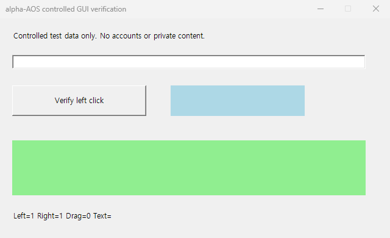
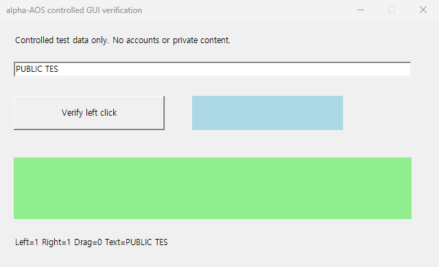

12. type_text: verified

Production alpha-AOS CLI/MCP, Cua Driver0.37.0. Six actions, twenty audit events. Five domain effects independently confirmed: left/right click, public typing, Backspace and drag. Focus click is a preparatory action. Raw typed text is excluded from the action journal; these synthetic screenshots show public test data only.
Run: aed4e462b67b0af5-804901b1
Anchor: f5b45629f410075dab83cee279acd03fd83ac82e2a4e2ee9bbda5b31722a6be0
Complete capture/input/read-back cycles: approximately 4.6–6.4 seconds on this host. This is not a comparative actuator benchmark. macOS/Linux live actions untested.

